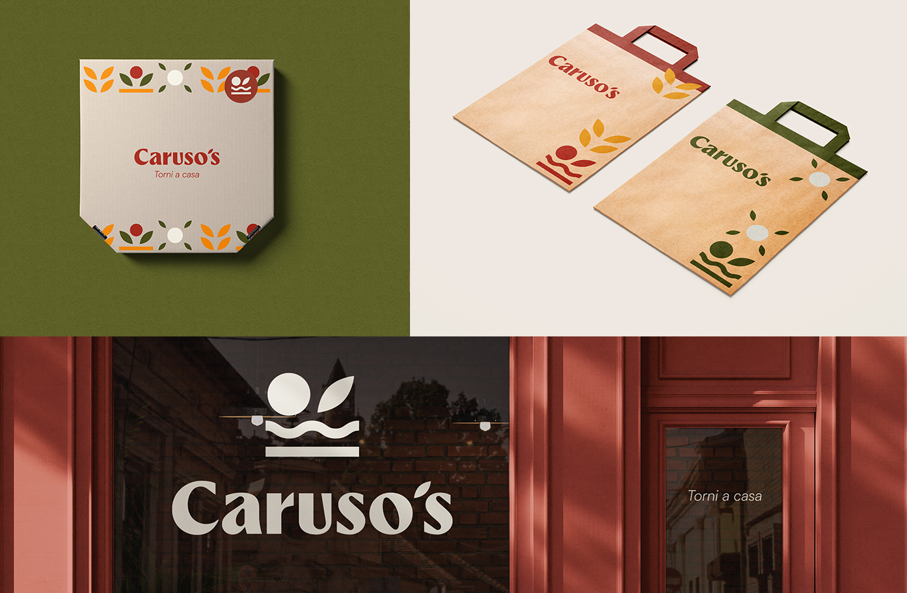
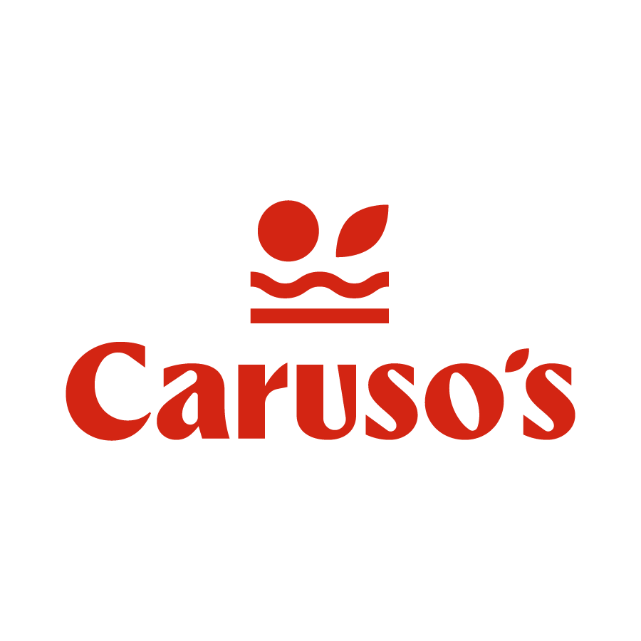

Caruso's
Concept
Caruso's nace a raíz de una familia de inmigrantes sicilianos que abrieron la primera tienda de productos italianos en el centro de Manhattan.
Por ello, Caruso's tiene la misión de ofrecer mucho más que productos, busca compartir una herencia basada en la autenticidad, la calidad, la transparencia y la tradición.
Esta inspiración brota de lo más profundo de Sicilia y sus raíces, sus paisajes y su gente rindiéndoles homenaje y evocando un viaje emocional de retornar a casa.

